Experiments
Laboratory Experiments
With the laboratory setup complete, we will now perform our experiments to better understand and use IPsec. We will see IKEv1 and IKEv2 in action, examine the operational differences between AH and ESP, understand how certificates and signatures can be used for authentication in tunneling protocols, and test IPsec's response to an attack.
Verify IKEv1 Handshake, KeepAlive and Regular Operation
For our first experiment, we will observe the handshake performed by IKEv1, which we saw theoretically in Figure 1 of the Overview page, comparing our diagram with the one we will observe in the simulation.
To observe the handshake, we first need to capture it. To do this, we will set up a Wireshark probe between R1 and RA. Then, we will access R1 and use the command:
This will clear the current tunnel and trigger IKE to perform a new handshake to establish the tunnel.
The handshake packets in Wireshark should look like this:
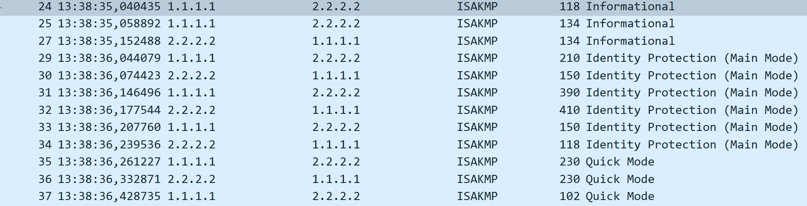
As we can see, the theory matches reality. After the initial Informational packets attempting to start a tunnel, IKEv1 enters Main Mode, which requires six messages: two to negotiate the policy, two to exchange keys, and two to authenticate both peers. This is followed by three Quick Mode messages to create the tunnel and acknowledge its creation.
Let's look more closely at each set of messages.
The first two Main Mode packets refer to the negotiation of the IPsec policy. As such, the packets must include the elements we configured in our policy, such as AES with a 256-bit key for encryption, SHA for hashing, Diffie-Hellman group 5, a pre-shared key as the authentication method, and a lifetime of 86,400 seconds.
Let's look at the payload of the first message to see whether it matches our expectations.
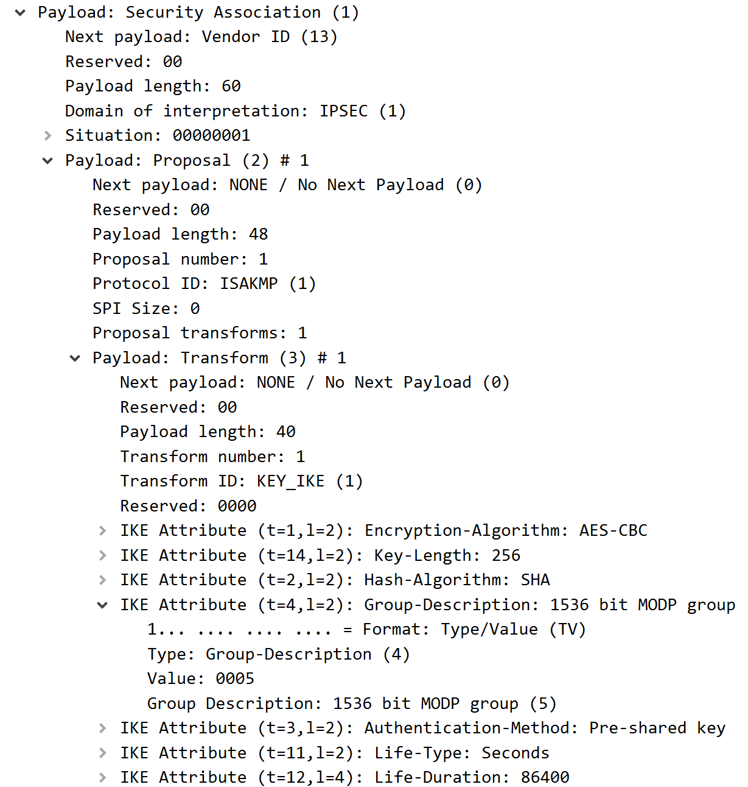
As we can see in Figure 2, the policy negotiation packets follow the policy we configured, including all the expected elements in the proposed transform set and policy.
Moving forward, let's look at the second set, which handles the key exchange. In these packets, we expect to find a nonce, the key being exchanged, and some information regarding Vendor IDs.
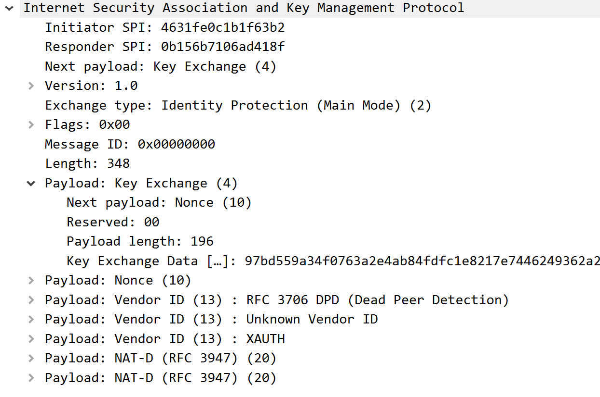
As we can see from Figure 3, the key exchange packets also match what we expected, containing the nonce, the Vendor ID, and, most importantly, the Key Exchange payload containing the key data.
From this point, all messages in the exchange become encrypted, as we have seen in the diagram, which makes it impossible to further analyze the remaining packets. However, from our configuration, we know that, during the final Main Mode exchange, the peers will authenticate themselves using the pre-shared key before moving on to Quick Mode to create the tunnel.
We know this has happened because the handshake continued, and the packets used to form the tunnel and acknowledge its creation were sent, proving that the authentication was successful.
IPsec also includes a KeepAlive mechanism to maintain the SA and tunnel. However, it is usually disabled by default, and we have not enabled it because we want to maintain a long-duration tunnel for testing purposes.
Finally, for regular operation, we can repeat the ping we performed to test the setup and quickly see that our packets are encrypted by IPsec. We can only see the IPv4 header before reaching the ESP-protected section, as shown in Figure 4.
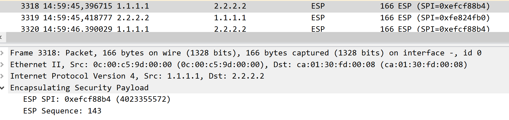
AH vs ESP in practice
For this experiment, we will switch our IPsec configuration to use AH instead of ESP to see the practical differences between the two.
To do this, run the following commands on the routers in configuration mode:
int Tunnel0
no tunnel protection ipsec profile myIPSecProfile
no crypto ipsec profile myIPSecProfile
no crypto ipsec transform-set myTSet
crypto ipsec transform-set myTSet ah-sha-hmac
crypto ipsec profile myIPSecProfile
set transform-set myTSet
int Tunnel0
tunnel protection ipsec profile myIPSecProfile
exit
exit
When this is done on both sides, the tunnel will be re-established with our new transform set, which dictates that only authentication and integrity protection are performed on the packets.
First, let's look at the handshake process and see whether there are any changes:
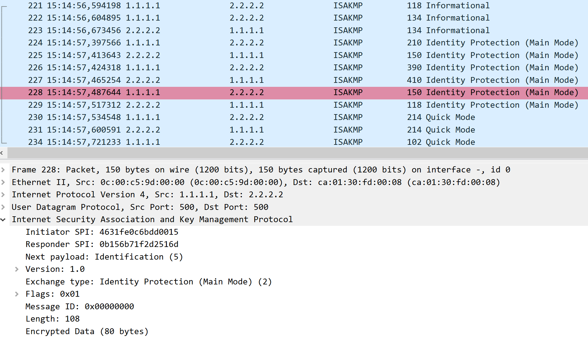
As we can see, not only is the handshake order unaffected, but the encrypted sections remain encrypted. This is what we expected, since IKE operates according to its own rules and only establishes the policy for IPsec. As such, the changes to the protection mechanism only affect traffic within the newly formed IPsec tunnel.
However, the regular traffic within the tunnel is bound to have changed. Let's perform a ping again and see what is different:
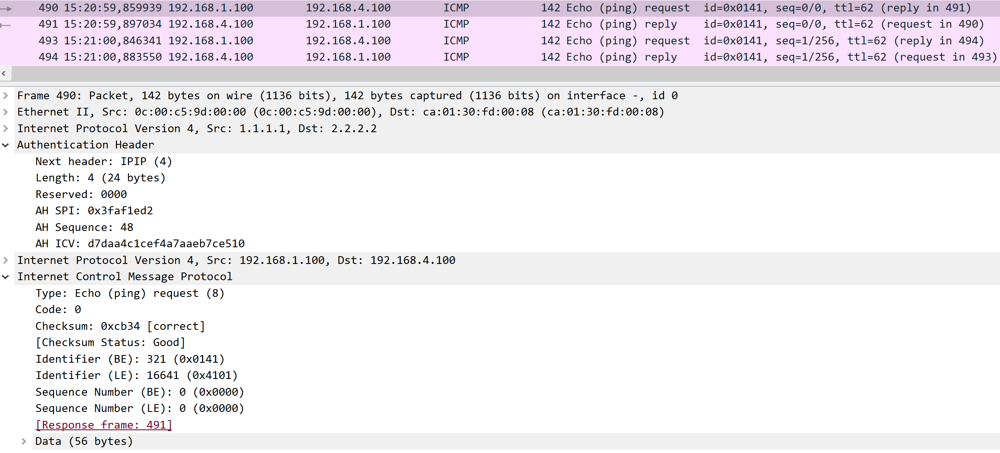
As we can see in Figure 6, the traffic is now transmitted in the clear. We can see that it is ICMP traffic, as well as the actual source and destination addresses of the packets. We can also see the Authentication Header, which includes an ICV to guarantee the integrity and authenticate the protected packet.
In conclusion, we can see that the difference between AH and ESP only affects the actual operation of the IPsec protection mechanism. While IKE is unaffected, the regular operation of IPsec changes, with packets now crossing the network without confidentiality protection and with only their integrity and authenticity assured. ESP, in contrast, provides integrity, authenticity, and confidentiality.
IKEv2 configuration and comparison with IKEv1
We will now analyze IKEv2, comparing it to its predecessor, IKEv1, and examining the changes in the handshake, available modes, cryptographic algorithms, and other factors.
To clear the routers for the new configuration, use the following commands:
By accepting both commands and choosing not to save the configuration when reloading, the router will be factory reset.
When this is done, we will begin setting up the new configuration.
Starting with R1, the configuration is as follows:
hostname R1
interface g0/0
ip address 200.1.1.1 255.255.255.0
ip ospf 1 area 0
no shutdown
interface g0/1
ip address 192.168.2.1 255.255.255.0
ip ospf 2 area 0
no shutdown
interface l0
ip address 1.1.1.1 255.255.255.255
ip ospf 1 area 0
crypto ikev2 proposal myProposal
encryption aes-cbc-256
integrity sha512
prf sha512
group 16
crypto ikev2 policy myIKEv2Policy
proposal myProposal
crypto ikev2 keyring myKeyring
peer R2
address 2.2.2.2
pre-shared-key ipsec
crypto ikev2 profile myIKEv2Profile
match identity remote address 2.2.2.2 255.255.255.255
authentication local pre-share
authentication remote pre-share
keyring local myKeyring
crypto ipsec transform-set myTSet esp-aes esp-sha-hmac
crypto ipsec profile myIPSecProfile
set transform-set myTSet
set ikev2-profile myIKEv2Profile
interface Tunnel0
ip unnumbered g0/1
tunnel source l0
tunnel destination 2.2.2.2
tunnel mode ipsec ipv4
tunnel protection ipsec profile myIPSecProfile
ip ospf 2 area 0
router ospf 1
router-id 1.1.1.1
router ospf 2
router-id 11.11.11.11
We can see some changes in the configuration used for IKEv2. Namely, we use stronger encryption and integrity algorithms, a Pseudo-Random Function (PRF) for key derivation, a larger Diffie-Hellman group, a keyring containing the peer address and pre-shared key, and an IKEv2 profile associated with the IPsec profile.
Now for R2:
hostname R2
interface g0/0
ip address 200.2.2.2 255.255.255.0
ip ospf 1 area 0
no shutdown
interface g0/1
ip address 192.168.3.2 255.255.255.0
ip ospf 2 area 0
no shutdown
interface l0
ip address 2.2.2.2 255.255.255.255
ip ospf 1 area 0
crypto ikev2 proposal myProposal
encryption aes-cbc-256
integrity sha512
prf sha512
group 16
crypto ikev2 policy myIKEv2Policy
proposal myProposal
crypto ikev2 keyring myKeyring
peer R1
address 1.1.1.1
pre-shared-key ipsec
crypto ikev2 profile myIKEv2Profile
match identity remote address 1.1.1.1 255.255.255.255
authentication local pre-share
authentication remote pre-share
keyring local myKeyring
crypto ipsec transform-set myTSet esp-aes esp-sha-hmac
crypto ipsec profile myIPSecProfile
set transform-set myTSet
set ikev2-profile myIKEv2Profile
interface Tunnel0
ip unnumbered g0/1
tunnel source l0
tunnel destination 1.1.1.1
tunnel mode ipsec ipv4
tunnel protection ipsec profile myIPSecProfile
ip ospf 2 area 0
router ospf 1
router-id 2.2.2.2
router ospf 2
router-id 22.22.22.22
After configuring the routers, it might be necessary to save the configuration and reload them for the changes to take full effect.
A simple ping afterward will confirm that everything is running as expected.
With the configurations successfully altered, let's proceed to the experiment and see what the IKEv2 handshake consists of.
To do this, reactivate the Wireshark probe between R1 and RA and run the command:
We will be able to see the following handshake:
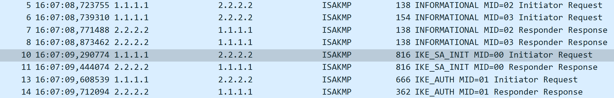
As we can see in Figure 7, the handshake matches what we saw previously in the diagram, starting with two IKE_SA_INIT messages that handle policy negotiation and key exchange, followed by two IKE_AUTH messages that are already encrypted and are responsible for authenticating the two peers.
One of the major differences between the two versions of IKE is the number of handshake messages. IKEv2 can perform the initial exchange in four messages, whereas IKEv1 requires six Main Mode messages, improving overall efficiency.
Another important difference lies in IKEv1's several operating modes for different scenarios, whereas the initial IKEv2 exchange is organized around IKE_SA_INIT and IKE_AUTH. This simplifies the initial handshake process and reduces the potential for misconfiguration and implementation complexity.
Another important detail is that IKEv2 uses a more modern and flexible cryptographic negotiation framework. In our configuration, we use AES-CBC with a 256-bit key, SHA-512 for integrity and PRF operations, and Diffie-Hellman group 16.
We can see some of these algorithms in Figures 8 and 9:
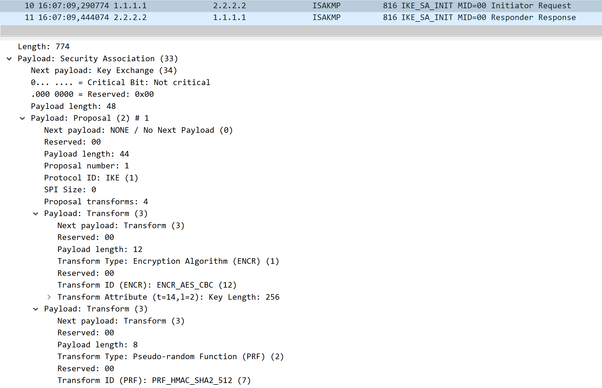
In Figure 8, we can see some changes from IKEv1, namely a stronger encryption algorithm in the form of AES-CBC with a 256-bit key and a Pseudo-Random Function using SHA-512 for key derivation.
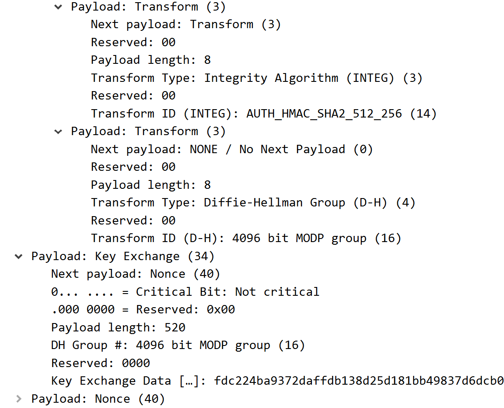
Following these, we can see in Figure 9 the SHA-512 integrity algorithm, Diffie-Hellman group 16, which provides a larger key-exchange group than the one used in our IKEv1 configuration, and finally the Key Exchange payload.
As we could see from our experiment, IKEv2 represents a significant evolution of IKEv1. It uses a more streamlined initial exchange, fewer operating modes, and a more modern cryptographic negotiation framework. Overall, this results in a simpler and more efficient approach to establishing IPsec security associations.
IKEv2 with Digital Signatures and Certificates as Authentication
For our next experiment, we will analyze how a tunneling protocol interacts with PKI-based authentication. Namely, we will see how IPsec, particularly IKEv2, interacts with certificate-based authentication instead of pre-shared keys.
For this experiment, we will have to change some configurations on our IPsec routers and on RA.
First, we need to add some configuration to RA, which will act as the Certificate Authority and provide the certificates that R1 and R2 will use to authenticate themselves during the IKEv2 handshake.
The configuration is as follows:
ntp master
ip http server
crypto pki server myCA
issuer-name cn=ipsecCA
lifetime certificate 365
grant auto
no shutdown
When asked for a password, enter a password with at least eight characters that you can easily remember.
With this configuration, we add a clock to the router using NTP, which is necessary for the certificates' validity periods to function correctly. We also configure a PKI server on this router, named myCA, with the issuer name ipsecCA, and configure it to automatically grant all requested certificates. This behavior is not recommended for real-world implementations, but it is a useful simplification for our experiment.
Then, we need to modify R1 and R2 to use the NTP clock on RA and start using certificates as their authentication method.
To do this, reset the routers as before with:
Then, enter configuration mode and use the following configuration:
hostname R1
interface g0/0
ip address 200.1.1.1 255.255.255.0
ip ospf 1 area 0
no shutdown
interface g0/1
ip address 192.168.2.1 255.255.255.0
ip ospf 2 area 0
no shutdown
interface l0
ip address 1.1.1.1 255.255.255.255
ip ospf 1 area 0
ntp server 200.1.1.10
crypto pki trustpoint myTrustpoint
enrollment url http://200.1.1.10:80
revocation-check none
crypto ikev2 proposal myProposal
encryption aes-cbc-256
integrity sha512
prf sha512
group 16
crypto ikev2 policy myPolicy
proposal myProposal
crypto ikev2 profile myProfile
match identity remote any
authentication local rsa-sig
authentication remote rsa-sig
pki trustpoint myTrustpoint
crypto ipsec transform-set myTSet esp-aes esp-sha-hmac
crypto ipsec profile myIPSecProfile
set transform-set myTSet
set ikev2-profile myProfile
interface Tunnel0
ip unnumbered g0/1
tunnel source l0
tunnel destination 2.2.2.2
tunnel mode ipsec ipv4
tunnel protection ipsec profile myIPSecProfile
ip ospf 2 area 0
router ospf 1
router-id 1.1.1.1
router ospf 2
router-id 11.11.11.11
This configuration follows mostly what was done previously for IKEv2, with some important changes.
First, we are now using NTP to synchronize the router's clock with the Certificate Authority. This is important because certificates contain validity periods that depend on the system clock. We then create a PKI trustpoint using the address of RA and assign it to our IKEv2 profile. Finally, we change the authentication method to use RSA signatures.
With these changes, R1 is ready to enroll for a certificate with RA and then use it for authentication when forming a tunnel with R2.
The configuration for R2 is as follows:
hostname R2
interface g0/0
ip address 200.2.2.2 255.255.255.0
ip ospf 1 area 0
no shutdown
interface g0/1
ip address 192.168.3.2 255.255.255.0
ip ospf 2 area 0
no shutdown
interface l0
ip address 2.2.2.2 255.255.255.255
ip ospf 1 area 0
ntp server 200.1.1.10
crypto pki trustpoint myTrustpoint
enrollment url http://200.1.1.10:80
revocation-check none
crypto ikev2 proposal myProposal
encryption aes-cbc-256
integrity sha512
prf sha512
group 16
crypto ikev2 policy myPolicy
proposal myProposal
crypto ikev2 profile myProfile
match identity remote any
authentication local rsa-sig
authentication remote rsa-sig
pki trustpoint myTrustpoint
crypto ipsec transform-set myTSet esp-aes esp-sha-hmac
crypto ipsec profile myIPSecProfile
set transform-set myTSet
set ikev2-profile myProfile
interface Tunnel0
ip unnumbered g0/1
tunnel source l0
tunnel destination 1.1.1.1
tunnel mode ipsec ipv4
tunnel protection ipsec profile myIPSecProfile
ip ospf 2 area 0
router ospf 1
router-id 2.2.2.2
router ospf 2
router-id 22.22.22.22
When both configurations are set and saved to the startup configuration, reload both routers for the changes to take effect.
With this done, the final step of the setup is to ask the Certificate Authority for a certificate. To do this, use the following commands on R1 and R2 in configuration mode:
Answer the questions to receive the CA's certificate first, and then enroll and receive your own certificate.
When this is done on both routers, IKE should start, the tunnel should form, and a ping should be possible through the tunnel.
After confirming that the ping is indeed protected, we can reset the crypto session to observe IKEv2 occurring. Although the IKE_AUTH exchange will still be protected, meaning that we will not be able to see the certificates being used directly, we can still see that certificates are being requested during IKE_SA_INIT in the response:
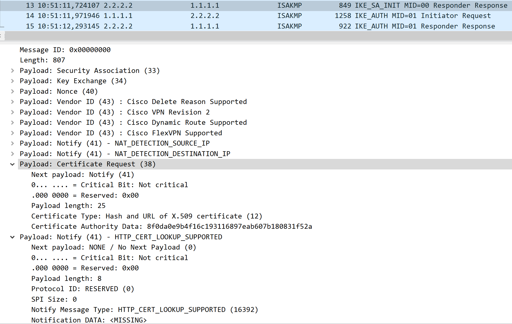
We can see in Figure 10 that, in the IKE_SA_INIT response, R2 requests that a certificate be sent in the following IKE_AUTH Initiator Request. R1 will then send its certificate and request R2's certificate, allowing the two peers to authenticate each other and form the tunnel.
To finish this experiment, we can inspect the information contained in each certificate by using:
This command will display the certificates stored on R1, including its own certificate and the trustpoint's CA certificate.
What information is stored in each certificate? Are these fields important for identification and authentication purposes?
Replay Protection and Attack
Our final experiment will focus on testing the capability of IPsec to withstand replay attacks. One of IPsec's security features is replay protection, which uses sequence numbers and a replay window to detect packets that have already been received and reject them.
For our experiment, we will place a new device between R1 and RA, which we will use to capture traffic crossing the tunnel and then replay it to R1, hoping to see the packets rejected by IPsec.
To begin, we will delete the connection between R1 and RA and create a new Docker container with two adapters. The name of the image is:
The environment variables used are:
This device contains tcpdump and tcpreplay, which are used to capture and replay packets, as well as the necessary tools to turn the device into a Layer 2 switch. This allows it to remain transparent to the traffic, enabling us to place it between the routers without interfering with their normal operation.
To set up this device, we first need to turn it into a bridge using the following commands:
ip link set eth0 up
ip link set eth1 up
ip link add name br0 type bridge
ip link set eth0 master br0
ip link set eth1 master br0
ip link set br0 up
With this done, the device is ready to capture and replay traffic without interfering with normal forwarding.
For the experiment itself, we will set two Wireshark probes: one between the device and R1 and another between R1 and R3. This will allow us to see whether the replayed traffic crosses through R1.
With this done, begin capturing ESP packets with the command:
This will capture ESP packets coming from R1 and save them in the replay-capture.pcap file.
We can inspect the contents with:
This allows us to see the captured ESP packets.
To generate more packets for capture, simultaneously run a ping from PC1 to PC2.
When you have enough packets, stop the capture and begin the attack against R1 with the command:
During the attack, you will see several packets appear in Wireshark between the device and R1, with a warning for out-of-order sequence numbers, as we expected. We can confirm this in Figure 11:
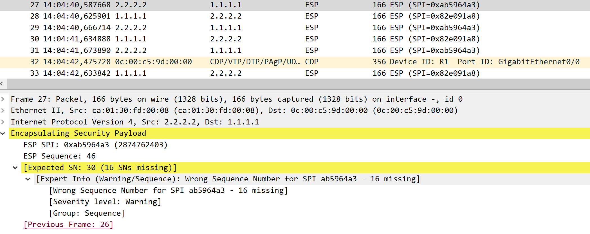
In the second probe, we should see that no corresponding packets are appearing beyond R1, which means that R1 is correctly applying IPsec's replay-protection rules.
We can also confirm this on the router by running the command:
This will show information regarding the IPsec SA, including rejected packets. We should see some rejected packets, similar to those shown in Figure 12:
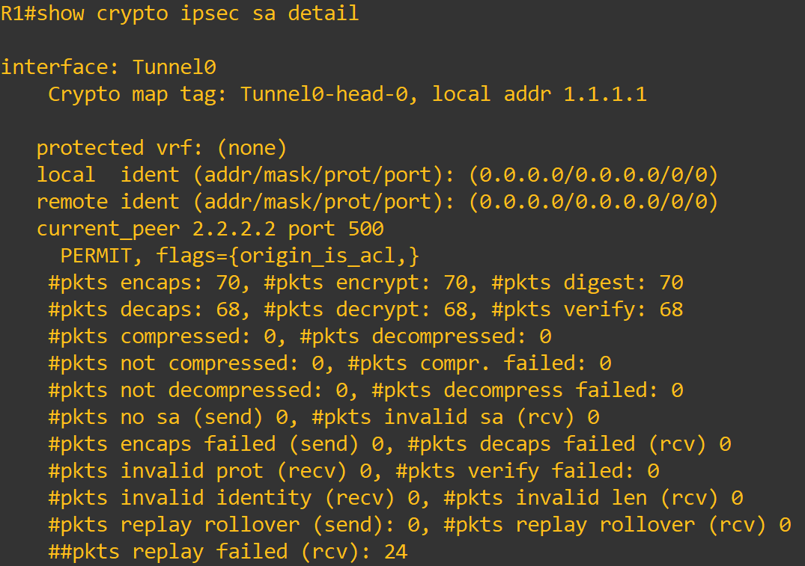
As we can see in the last line, 24 packets were rejected as part of our replay attack, confirming that the attack occurred and that it was successfully defended against by IPsec.
With this, we conclude our series of experiments. We hope that through these experiments, you have learned more about how IPsec works, how tunneling protocols perform their handshakes, in this case through IKEv1 and IKEv2, how there are several methods for authenticating two devices over the Internet, and how IPsec itself protects the packets that cross its tunnels, whether through AH, which provides integrity and authentication, or ESP, which additionally provides confidentiality.
Thank you for completing our laboratory, and we hope to see you in TLS!